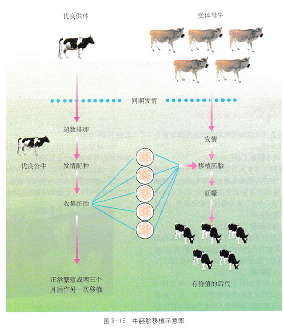
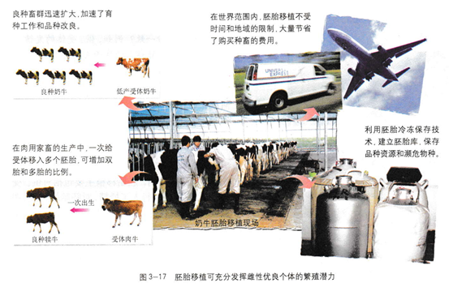

3.3 胚胎工程的应用及前景
胚胎工程技术包含的内容很丰富，目前在生产中应用较多的是家畜的胚胎移植、胚胎分割和体外生产胚胎技术。还有多项胚胎工程技术仍在深入研究或小规模试用。
胚胎移植
胚胎移植（embryo transfer）是指将雌性动物体内的早期胚胎，或者通过体外受精及其他方式得到的胚胎，移植到同种的、生理状态相同的其他雌性动物的体内，使之继续发育为新个体的技术（图3-16）。其中提供胚胎的个体成为“供体”（doner），接受胚胎的个体叫“受体”（recipient）。胚胎移植实际上是生产胚胎的供体和孕育胚胎的受体共同繁殖后代的过程。在胚胎工程中通过任何一项技术，如转基因、核移植，或体外受精等技术获得的胚胎，都必须移植给受体才能获得后代。因此，胚胎移植又是胚胎工程其他技术的最后一道“工序”。

胚胎移植的现状和意义
近20年来，在胚胎移植中，牛的胚胎移植技术较为成熟。以奶牛为例，目前已达到一头供体牛平均每次处理收集到的胚胎，经移植可产下3～4头犊牛，由于每年可处理4～5次，这样，一头良种母牛一年生下的后代可达数十头，远远超过在自然状态下一生所得的后代数量。羊的胚胎移植效率比奶牛还要高。
自20世纪60年代以来，我国家兔、绵羊、牛、马和山羊的胚胎移植相继获得成功。近10年来，牛、羊的胚胎移植在我国部分地区已进入生产应用阶段 ，这些成果大大推动了我国畜牧业的发展。
进行胚胎移植的优势是可以充分发挥雌性优良个体的繁殖潜力（图3-17）。在这项技术中，供体的主要职能变为只生产具有优良遗传特性的胚胎，繁重而漫长的妊娠和育仔的任务由受体取代，这就大大缩短了供体本身的繁殖周期。同时，在对供体实行超数排卵处理后，可获得多枚胚胎，经移植可得到多个后代，使供体生产下的后代数是自然繁殖的十几倍到几十倍。

胚胎移植的生理学基础
准备移植的胚胎，移植到任何一头母牛的子宫内都能发育吗？供体与受体之间进行胚胎移植时，会不会发生免疫排斥反应？要解决这些问题都需要对胚胎发育进行生理学方面的研究。
胚胎移植能否成功，与供体和受体的生理状况有关。
第一，哺乳动物发情排卵后，不管是否妊娠，在一段时间内，同种动物的供、受体生殖器官的生理变化是相同的，这就为供体的胚胎移入受体提供了相同的生理环境。第二，哺乳动物的早期胚胎形成后，在一定时间内不会与母体子宫建立组织上的联系，而是处于游离状态，这就为胚胎的收集提供了可能。第三，大量的研究已经证明，受体对移入子宫的外来胚胎基本上不发生免疫排斥反应，这为胚胎在受体内的存活提供了可能。第四，供体胚胎可与受体子宫建立正常的生理和组织联系，但移入受体的供体胚胎的遗传特性，在孕育过程中不受任何影响。